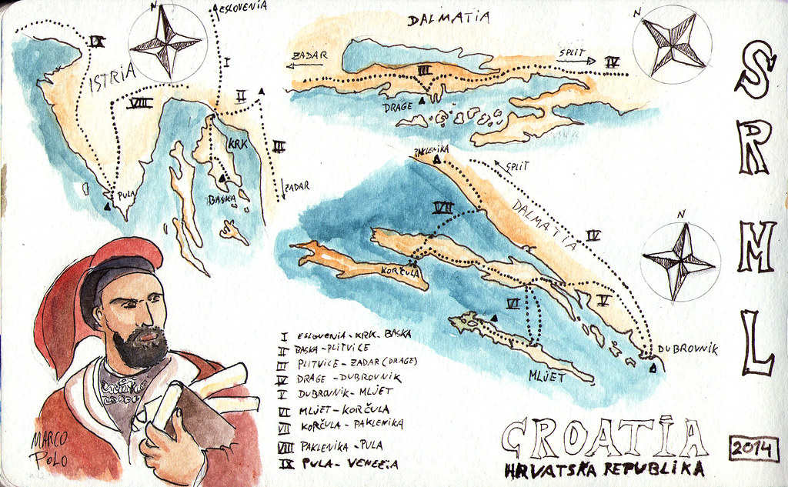

Hei, olen Marko Hilari 44-vuotias opiskelija Klaukkalasta Klikkaile navia saadaksesi lisää tietoja minusta Tunnettuja Marko nimisiä henkilöitä Marko Anttila (s. 1985), suomalainen jääkiekkoilija, olympiavoittaja ja maailmanmestari Marco Polo (1254–1324), italialainen kauppias ja tutkimusmatkailija Marco Andretti (s. 1987), yhdysvaltalainen autourheilija Marko Jantunen (s. 1971), suomalainen jääkiekkoilija 